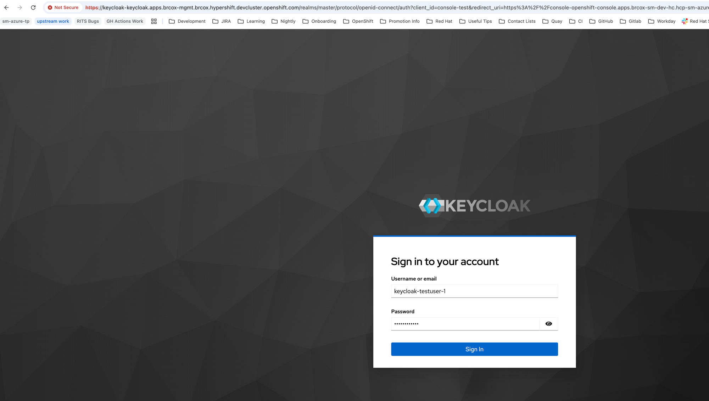
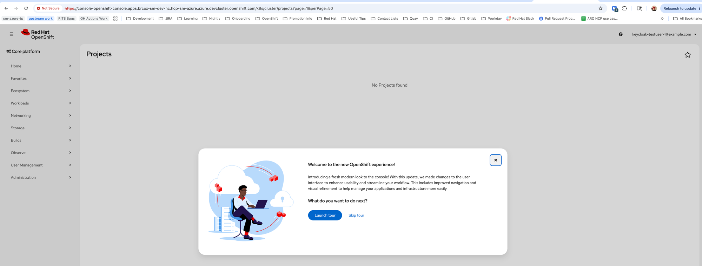

Objective: Verify that the OpenShift console redirects to Keycloak for authentication and correctly identifies the user after login.
Console URL: https://console-openshift-console.apps.brcox-sm-dev-hc.hcp-sm-azure.azure.devcluster.openshift.com
| Step | Check | Result | Evidence |
|---|---|---|---|
| 1 | Console redirects to Keycloak login | PASS | Browser navigated to keycloak-keycloak.apps.brcox-mgmt.../realms/master/protocol/openid-connect/auth with client_id=console-test |
| 2 | Redirect back to console after authentication | PASS | Console loaded at console-openshift-console.apps.brcox-sm-dev-hc.../k8s/cluster/projects |
| 3 | Console displays Keycloak user identity | PASS | Top-right corner: keycloak-testuser-1@example.com |
Opened console URL in an incognito browser window. The console automatically redirected to the Keycloak login page with the correct client_id=console-test and redirect_uri pointing to the guest cluster console.

Keycloak authorization endpoint on the management cluster. URL bar shows client_id=console-test and redirect_uri=...console-openshift-console.apps.brcox-sm-dev-hc....
After signing in with keycloak-testuser-1, the browser redirected back to the OpenShift console with the user identity displayed.

Console shows keycloak-testuser-1@example.com in the top-right corner. “No Projects found” is expected — the test user has no RBAC roles assigned.
console-test, same as with Azure AD (Scenario 7)login.microsoftonline.com, the console now redirects to the self-hosted Keycloak instance on the management cluster